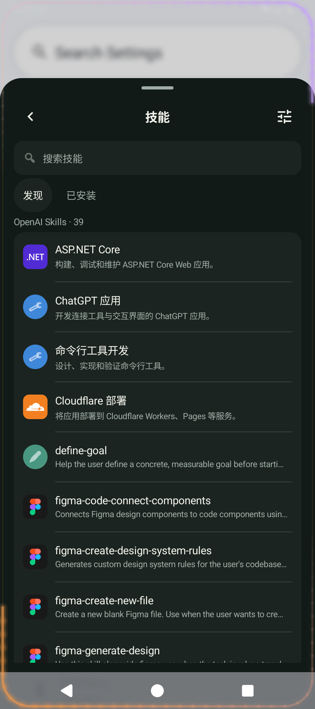

Taku OS · Agent
Actual emulator screenshotsEight skills are fully visible on one screen, with search and filters retained.

Click an image to open and enlarge the original. The page retains Workspace Portal login protection.
Eight skills are fully visible on one screen, with search and filters retained.

Click an image to open and enlarge the original. The page retains Workspace Portal login protection.